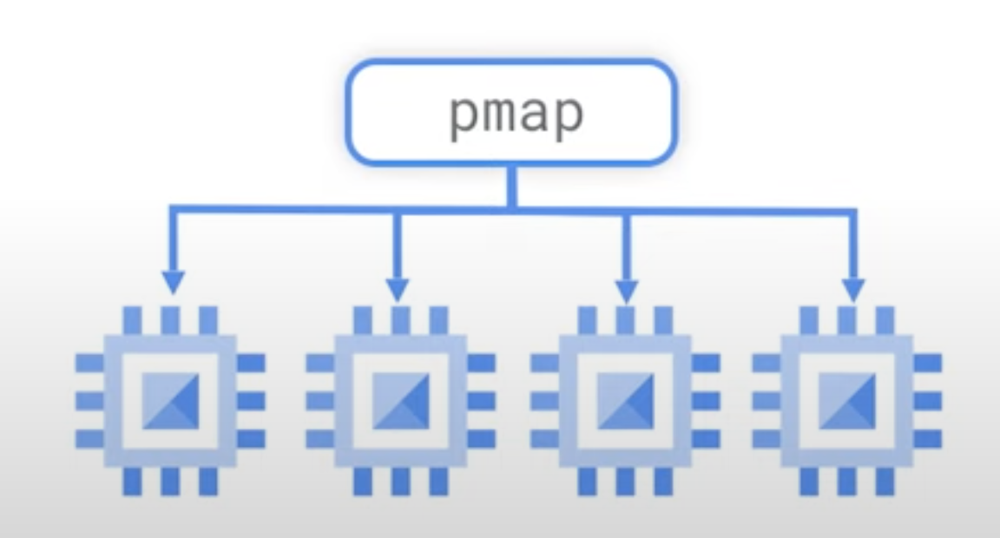
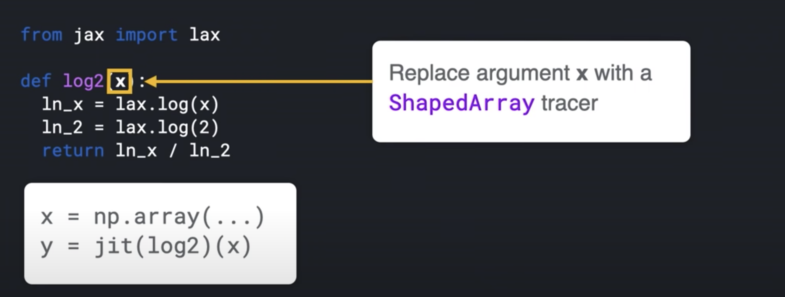
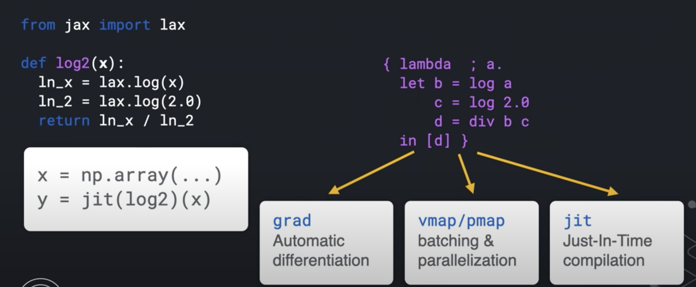
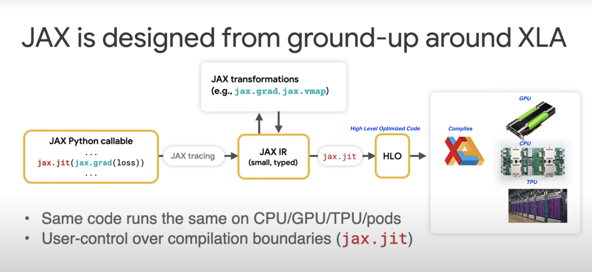

12. JAX

JAX is a new library from Google Research. JAX can automatically differentiate native Python and Numpy functions.
- Loops
- Branches
- Recursion
- Closures
- Can take Derivative of Derivatives
- Supports reverse mode differentiation, also known as [Back Propagation] using Grad function
- Supports forward mode differentiation
XLA
XLA is Accelerated Linear Algebra.
-
It is a domain-specific compiler for linear algebra that can accelerate TensorFlow models with potentially no source code changes.
-
Performs optimizations like:
- Fusing operations together (something like consolidation) so the intermediate results do not have to written out the memory. Instead it get streamed into next operation.
- This enable faster and more efficient processing
This is some what crudely equal to nodejs stream: - Refer: TableauCRM CLI using this stream concept, where it loads data from a Oracle SQL Query results directly into Tableau CRM dataset - refer: sfdx mohanc:ea:dataset:loadFromOra
def model (x, y, z): return tf.reduce_sum( x + y * z)
JAX uses XLA to compile and run our Numpy program on GPUs and TPUs
JAX uses JIT (just-in-time) compile of custom functions into XLA optimized kernels using decorator @jit
@jit # jit decorator
def update(params, x, y):
grads = gard(loss)(params, x, y)
return [ (w - step_size * dw, b - step_size * db) for (w, b), (dw, db) in zip (params, grads)]
pmap
- JAX applies pmap (Parallel Map) replicating computations across multiple cores 
Autograd
Autograd (https://github.com/hips/autograd) can automatically differentiate native Python and Numpy code.
Functions available for the transformations
- grad
- jit
- pmap
- vmap - automatic vectorization
- allowing us to turn a function which can handle only one data point into a function which can handle batch of these data points of any size with just one wrapper function vmap
Sample - MNIST
import jax.numpy as jnp
from jax import grad, vmap, jit
def predict(params, inputs):
for W, b in params:
outputs = jnp.dot(inputs, W) + b
inputs = jnp.tanh(outputs)
return outputs
def loss (params, batch):
inputs, targets = batch
preds = predict(params, inputs)
return jnp.sum( (preds - targets) **2 ) # SME
gradient_fun = jit(grad(loss))
preexample_grads = vmap(grad(loss), in_axes=(None, 0))
Key Ideas
- Python code is traced into an Intermediate Representation (IR)
- IR can be transformed (automatic differentiation)
- IR enables domain-specific compilation (XLA - Accelerated Linear Algebra)
- Has very powerful transforms
- grad
- jit
- vmap
- pmap
- Python's dynamism makes this possible
- JAX makes use of this dynamism and evaluates a function's behavior by calling it on a tracer value
def sum(x):
return x + 2
class ShapedArray(object):
def __add__ (self, other):
self.record_computation("add", self, other)
return ShapedArray(self.shape, self.dtype) # dtype is like float32
sum( ShapedArray( (2,2), float32 ))

With this IR, JAX knows how to do the transforms like:
- grad
- jit
- vmap
- pmap


TF_CPP_MIN_LOG_LEVEL=0
import jax
import jax.numpy as jnp
global_list = []
def log2(x):
global_list.append(x)
ln_x = jnp.log(x)
ln_2 = jnp.log(2.0)
return ln_x / ln_2
print( jax.make_jaxpr(log2)(3.0) )
- Document
- Output
{ lambda ; a:f32[]. let
b:f32[] = log a
c:f32[] = log 2.0
d:f32[] = div b c
in (d,)
}